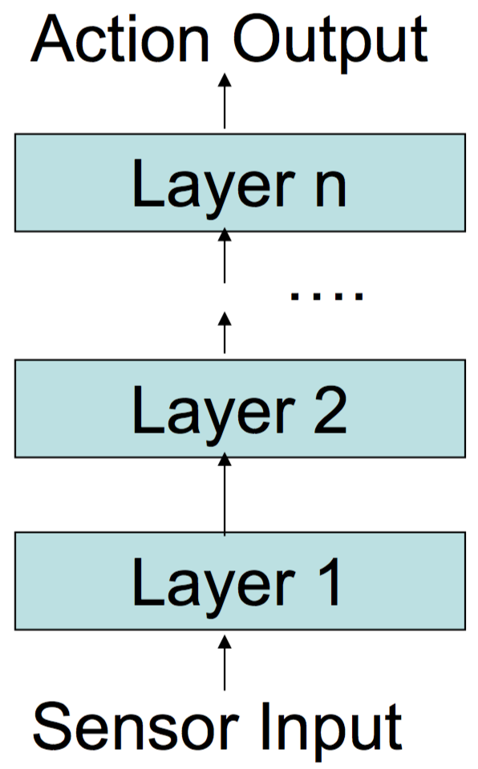
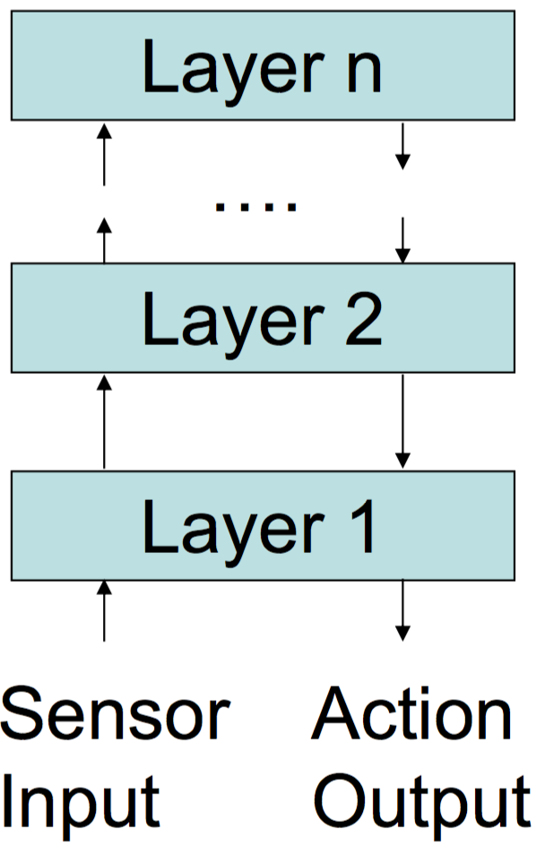

Use simple behaviour to "simulate" intellegence
e.g. run away from predator and run towards friends
Rules are a set of actions that decide the behaviour of the agent
Several rules can fire simultaneously (e.g. avoid from wall while moving towards target)
Rules are defined defined as (c, a)
(Positive) Reactive agents are simple and fast
(Positive) If the rules are well designed an agent will have near optimal performance (see Mars rover example)
Reactive agents are simple and fast
If the rules are well designed an agent will have near optimal performance (see Mars rover example)
Can be hard to design rules for complex environments
Scenario: A spaceship lands on Mars. It is known that there are valuable resources on the planet, but their locations are unknown. The resources normally occur in clusters.
Tactic: Deploy many robots that follow a simple set of rules to find the resources and return them to the spaceship. Use a radio transmitter on the spaceship that will allow robots to home back to the spaceship by moving towards the source of the radio signal.
Rules (in priority ordering):
(Positive) Can make decisions based on domain knowledge and predictions of other agents' moves
(Positive) Behaviour has clean semantics
(Negative) Can take a long time to compute
(Negative) Difficult representation for dynamic environments
Combines different layers / models to react to different situations / states
Layers all layers (ways to react) in the same horizontal column
Sensor input goes to all layers that make a decision at the same time
A censor takes sensor input and choses best response
(Negative) Difficult to implement (How do you program the censor?)
(Negative) All interactions have to be considered ahead of time
Sensor initially only passes information to one layer
Layer decides whether it is the best layer to make a decision. If not, passes the information to next layer.
| One-Pass | Two-Pass |
|---|---|
|  |  |
|
Actions are bubbled up tree
(Negative?) Since all actions have to go through all layers it could be slow |
Actions only bubble up until a decision is made
(Positive?) Could be faster than One-Pass (Negative?) Could miss better actions in higher layers |
Simple rules of movement agents can follow
Cant simulate seemingly intelligent behaviour
A simple force vector is used to steer an agent towards (attracting force) or away from (repelling force) an object
Several forces can act upon an agent at once
The forces are weighted (e.g. a force to steer away from a wall might be weighted heigher than getting to a target to avoid collision)
Forces could be relative to distance to an object (e.g. as an agent gets closer to an object the repelling force gets stronger to result in a smooth turn)
(Positive) Generally easy to model
(Negative) Can be hard to get forces right
(Negative) Can be hard to model for objects that aren't circular (e.g. avoid a wall, how do you model the repelling force?)
Forces between the agents themselves
Can simulate lifelike behaviour of animals and people
Three main types of flocking:
Separation: Force to steer agent away from another agent in its neighbourhood (e.g. Prey steering away from a predator)
Alignment: Keeps agents' heading aligned with neighbouring agents (Uses a vector average of headings)
Cohesion: Attract agents to centre of other agents (e.g. birds flocking)
Doing by talking: an agent tells the other agent what they're planning to do
Self-Committing is when an agent utters an action and it is assumed the other agent will believe agent 1, it is in agent 1's best interest to follow their utterence
Self-Revealing is when an agent is considering an action, it is in their interest to tell the truth, assuming the other agent will believe them
In the stag hunt game, the utterence "I am hunting stag" is self-committing (because if agent 2 believes agent 1 it is in agent 1's best interest to hunt stag) but not self-revealing (because if agent 1 is planning to hunt hares, it would also be in their best interest to say they were hunting stags)
Babbling equilibrium is a situation where an utterance from the other player will not affect player 1's decision (Cheap talk has no effect)
Talking by doing: Nature decides a states, player 1 knows the state and plays based on their knowledge. Player 2 knows what player 1 played, but not the state of the environment (repeated game with imperfect information)
Locutionary act is the act of saying something (e.g. saying "there is a car coming your way")
Illocutionary act is the act performed in saying something (e.g. warning that a car is coming your way)
Perlocutionary act the effect the illocutionary act has on the hearer (e.g. making the hearer jump to avoid the car)
Grice's Cooperative Principle:
The outcome is decided based on the highest combination (argmax) of the agents ultilies (x) based on the disagreement utility (n)
argmax(xa - na)(xb - nb)
Assume both players look into the future up until the deadline
The player that makes the last decision will dictate the outcome by using the idea that he has the final say. This means that the last player to make a proposal, will take everything that is left knowing that the other player has to accept due to the deadline
Using backwards propegation, the other player (i.e. the non final player) will match the final players utility in the second to last step, taking the rest for themselves (e.g. if player b takes 0.5 in the final step, player a will give b 0.5 in the second last step and take whatever is left on top of 0.5)
This continues until step 1, where the first player is able to produce an offer that is optimal for himself and he knows the other player will accept as the second player would offer this utility for themselves in the next step
Ranking systems are systems where the outcomes equal the agents
This means the agents are voting for each other to decide which agent is the most popular
Often used in search engines to decide pange rank
The more agents that point to another agent, the higher that agent gets ranked
Strong transitivity is not concerned with how many outcomes a certain agent has voted for
Weak transitivity is concerned with how many outcomes an agent has voted for (e.g. if an agent has voted for almost every outcome, they are indecisive and their opinion is worth less)
Ranked IIA only the votes places by agents and their transitive weighting should affect the outcome (e.g. on websites, .com websites should not be weighted higher than a .net website)
Strong Quasi-transitivity ??
Distinguish between learner and teacher
The learner chooses an action based on experience so far
Tit-for-tat can be seen as rudimentary learning rule
Learning aims to understand another agent's behaviour and hence the game being played
Learning is done by updating beliefs and choosing action based on new beliefs
Properties of learning methods:
Realism: Learning methods should mimic or seem realistic with respect to learning in real life
Convergence: The learning method should converge with some solution concept (e.g. Nash equilibrium)
Safety: A learning method that guarantees at least a maxmin payoff
Rationality: When the opponent settles on a strategy the learning method should settle on the best response
No-regret: A learning strategy that against any opponent yields no less than the payoff the agent would have obtained by playing a pure strategy
Fictitious Play is a learning method
It starts off with an initial guess at the strategy of the other player (e.g. {1, 1.5} denotes that player 2 will have a higher chance of playing their second option)
The initial guess must be meaningful and cannot be 0
The agent then plays the best response to what they believe is most likely for the opponent to player
Once the agent observes what the opponent has played, the initial guess is updated by increasing the number of the option that was just played. This is normally done by increasing by 1
E.g. if the initial guess is {1, 1.5} the agent will play the best response for the opponent playing their second option. If the opponent in fact plays the first option, the guess is updated to {2, 1.5}. The agent now plays the best reposnse assuming the opponent will play their first option
Fictitious play is said to have reached a Steady state when the action that will be taken in the next round, is also the action that will be taken in all remaining rounds
This normally occurs when agents have the same interest (e.g. will not occur in for instance the matching pennies game, where one agent wants to match and the other wants to not match)
Theorem: If a single state game has a Nash equilibrium, then this will be the steady state of a repeated game with agent learning
Social Choice
How do you aggregate choices of individual agents (e.g. voting)
Assumes:
Different ways of deciding a social ordering (winner)
Condorcet winner: The outcome that is ranked the highest among the most agents wins
Plurality voting: Every agent votes for their favourite. Outcome with most votes wins
Plurality with elimination: Every agent votes for their favourite. Each rount the outcome with the least votes is eliminated, then everyone votes for their favourite again. This time agents that preferred the least popular outcome will vote for their next preferred outcome. Winner is the outcome that remains.
Comulative voting: Each agent has a set number of votes they can cast. They can assigned however many of their votes to each agent as they desire (e.g. might put half their votes on first outcome, and split the rest amongst the remaining outcomes). Outcome with the most votes wins
Approval voting: Agents can give up to 1 vote to as many outcomes as they want. Winner is the outcome with the most votes
Borda voting: Agents assign points to outcomes based on their preference. Most preferred outcome recives n-1 points, next preferred n-2 and so on, where n is the number of outcomes. Outcome with the most points wins
Pairwise elimination: Voting has a schedule pairing up outcomes to be voted on. Ever round agents vote for their favourite of the two outcomes. Outcome with least votes is eliminated. Winnder is the outcome that remains at the end.
Social welfare concerns all preferences (e.g. A > B and B > C)
Social choice concerns only the winner (i.e. the highest ranked outcome)
Different voting systems can cause different outcomes to win. This is referred to as voting paradoxes
A social choice function is pareto efficient if if all agents prefer outcome A to outcome B, then the voting system must rank A over B
Weakly pareto efficient same as pareto effciency, but only concerned with the winner (i.e. the outcome ranked highest in the social ranking)
Independece over irrelevant alternatives (IIA): when deciding which outcome, A or B, that is socially preferred by agents the choice function only looks at A and B. This means the comparison between A and C, or B and D will not affect the outcome of the preference ranking between A and B
Monotonicity is if in one ordering over outcomes A wins over B, then in another ordering of outcomes A is either ranked higher than or equal to B in the rankings, then A should win
A social ranking has a dictator if there is one agent whose preference ordering dictates the overall social preference ordering over the outcomes
Arrow's Theorem
If a social welfare function has 3 or more outcomes and is both Pareto efficient and IIA, then it is also dictatorial
If something is weakly pareto efficient and monotonic it is a dictatorship (Don't know if this is actually Arrow's theorem, but similar to the actual one)